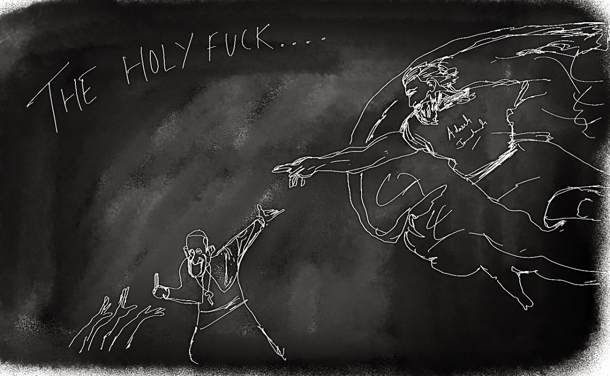
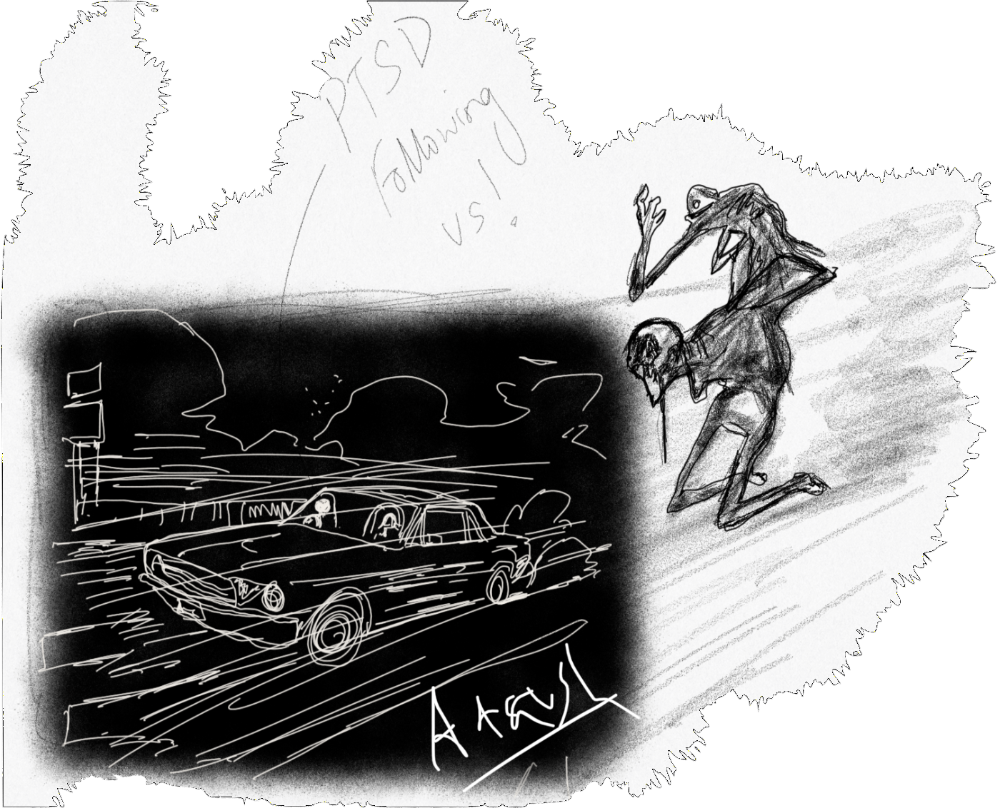
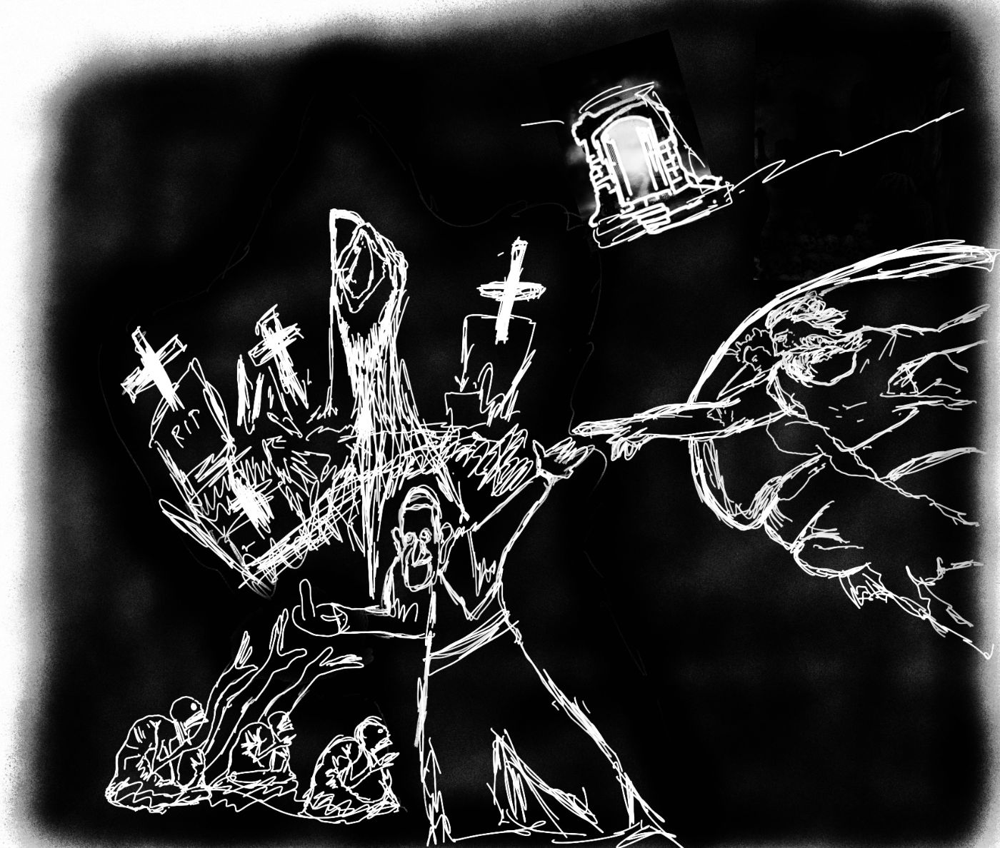
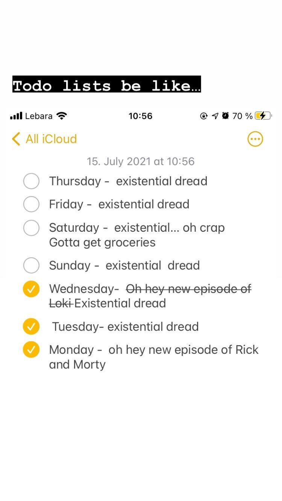
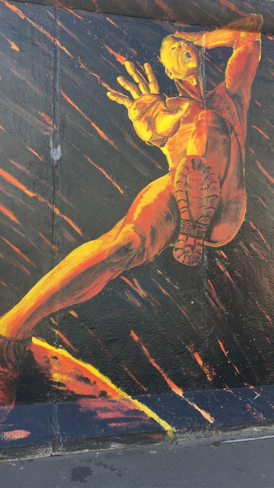
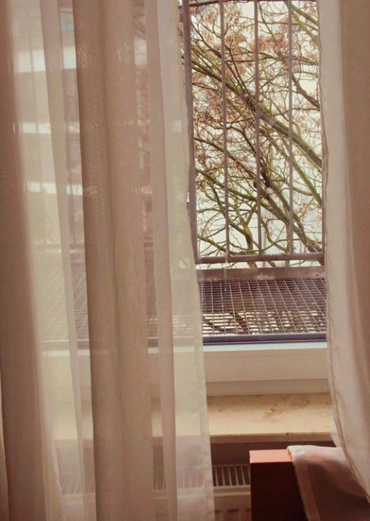

Sometimes perhaps only in Death you can experience the Divine. That is why God invented Cancer. That is why, sometimes people wage war and blow things and blow buildings. Sometimes they blow themselves up and sometimes they fly planes into the buildings.
Just so that they can experience the Divine.

The car came to life with a deafening sound. Fucking ramshackle of an engine. I hop in… An old-school 50 pound boombox spitting tunes.. melody strewn. Frail lyrics slipping through the cracks. I start driving, doing a 90 on the freeway. I am startled by something. Something hurtling across the highway, following me with almost at the same speed. I get anxious and check the rearview mirror. A sigh of relief escapes my chest… “Phew.. its only my PTSD. I thought they were cops or something”.

Here I go again..
I’m back at this mundane wordplay.
Cringe at best... product of my discord mind melée..
Some would call it just another inane prattle. A fucking twattle.
From a twaddling wannabe (H)Em’ingway.
Yes I know I’m no Hemingway...
Yes I know I keep twattlin
Like typewriting Mark Twain
High on a bottle...Refillin (his ink bottle duh) on his triflings...
But Shouldn’t you start penning em ?
When the fucking walls start whisperin gems ,
You can call them Musings for the front row Mens and Dames.
Rattling their jewellery... Cheering my ingenuity in some faux-awe applausery...
Crowded room full of People all jumping off their seats..
Listless languid deceitful elites...
Revelling in their fetishes and fetes..
Expecting me to spit new verses I have never even writ....
I guess it’s the curse of the standard..
Making me feel like an imposter, a fraud...
My minds a dumpster, sometimes sinister pet name Dexter...it’s flawed...
You got a syndrome...beneath that facade..Blame it on the chromosome! quips Freud...
As I feel like I’m hitting my mark...
I find myself back in this abyss...
Soliloquing ...pickin apart all my coup..
I bully myself because I don’t seem to do what I put my mind to..
Muttering to myself “Damn. I’m a crook”.
She was like a midsummer night’s dream. I was scared if I woke up… She’d disappear without a trace.
I’d wake groggily… startled.. stumbling, fumbling, foundering, floundering hurriedly to write down the essential details.
Because quivering words were the only crutches, I could rely on to make this thing tangible.
Unfortunately, I could already feel bits of her slipping through the cracks and getting lost in the oblivion of my mind, where sometimes I visit to get out of my head…
So I cheat.
I paint this thing with my words.
These words, like my thoughts, are obsessive and incessant and perpetually zeitgeist-y to the point of suffocation,
Pages after pages I write... spiraling out of control like tentacles that drag you into this darkened abyss…into abysmal nothingness… a chasm….
And I think I write a lot about her than I should…
Back on my bullshit, my back to the wall..
I can’t turn my back on it I admit..it’s really banal.
Back to these frail lyrics… slipping from the back of my mind…
Back to splitting my words...
Getting em twined so that they kinda of a rhyme…
On a scratchy vinyl.
Back at the yard of my mind..
Digging for words I can mine...
Mostly corpses of rhyme.
To trickle a slow flow of endorphin brine…
Like a Mormon preaching his sermon
With a wicked dose of a wine …
Thinning his herds… his shepherd be Jack Kevorkian…
But that’s Thy Design.

“I remained too much inside my head and ended up losing my mind.” — Edgar Allan Poe

On most days I barely notice this hanging thick around my window. It’s seamless.
It’s always bubbling, ichor-like, smouldering cauldron
Oozing out of the crevices of chasm that I think is loneliness…
I don’t know how deep this void of listless nothingness exists
But this I know… this I know that it lives.
Living this life on a lease…Sometimes it leaves… do you hear that rustling?
Leaves… this life of caprice…
Smothering…Stifling… Sultry and sometimes Sulking into a crescendo…
No no I’m not seeing things. It’s just Nature abhors naked singularities…
I know it’s there… it’s there like a tottering turret on a castle of glass…
It’s hard for me to explain… it’s hard because I think these words…
These insipid words… they are just tired of me I guess…
I am sorry I abused you… I had to find ways to subdue this phantom silence…
So like a trite Twain traipsing around,
I threw my words nonchalantly, carefree like I used to throw around my apologies…
And now every time I want to tell you, these words… they form a knot in my throat leaving me gasping…
I think they are no longer interested in our dreary dysfunctional rendezvous,
Now who am I gonna offend?
On most days I barely notice it.
On most days I wake up with stale aftertaste like a wicked dose of wine in my throat..
the kind that is cold as ice but burns like rum on a fire… how does it know?
Maybe it is because I lay awake on this casket that I call my bed draped in whites, writhing, as dreams that I never had slither and reek out of the rifts of my casket that I call my bed.
For a brief instant when the curtains are flying hither and yon…
untethered and unhinged by the shackles of my window frames…
i think you can make out distinct shapes…
Like a nascent pareidolia humming itself to sleep…
But mostly I am back at the yard of my mind…
Digging for words I can mine…
All I find are corpses of rhymes drowning,
Hunkered down by the...
Asphalt bracelets like clinkering handcuffs
All neatly tied up in metaphors that I don’t remember…
As I said… on most days I barely notice it….

A crisp day hangs tight between the sepia strewn dullard of winter night..
I am no longer woken up by the warm sunrise hitting my face…
I clutch my linty mattress like a tottering crutch
As I struggle to stitch myself up from the stale air and
Dull headaches smeared across my walls...
If you look closely at the cracks, you can see the rifts trickling with emptiness…
As I collect myself, I am careful not to spill my guts,
Because you would then see the emptiness just walking out of the room…The bland cereal stares at me, from the depths of an ornate bowl..I think the ostentatious bowl mocks me - “Perhaps you should be used as a container..
All you are are cold bones muffled with fistful of drowning sorrows, Must be nice to drown your sorrows sometimes instead of drowning in them…”
As a colony of crinkles like my consternations,
bundled up like braided noose sink into my piled up laundry,
I romanticise these embellishments by dressing them up as overdue receipts of shoplifted Love.
This listless void that I carry… I’m sorry if it’s too loud..
Here - I smother it, till it reduces to a blob of nothingness,
Here perhaps now this abyss fits into my palms… growing faithfully inside…
Re-arranging my insides and Re-decorating and Regurgitating, leaving me empty. You thought they’d look better this way.
Then why do you keep changing your mind?
Now it’s just ugly.
Here let me chisel it for you…stitch myself up from stale air,
smeared headaches… you know all things hewn in wild workshop,
simple stuff out of homely materials as I wait for another crisp day with my listicle of sad things.
My minds a wall with
emptiness scribbled all
over.. It's etched on the rocky
chairs, the tables...
So it looks less foreign.
Embossed with footprints
of ruin.. You can hear the uncut
version when they go
limp.
Dangling phony
metaphors to look presentable...

Watch you watch me…
Because it feels like I only exist when somebody notarises my tragedies
So I keep staring at my walls…
Conjuring up emptiness..
I trace deliberate lines.. lingering nascent pareidolia…
You follow the lame, uncertain curves for a little distance
they suddenly commit suicide—plunge off at outrageous angles, destroy themselves in unheard-of contradictions…
I keep apologising for staring at the ceiling
I think they are no longer interested in our dreary dysfunctional rendezvous,
Now who am I gonna offend?